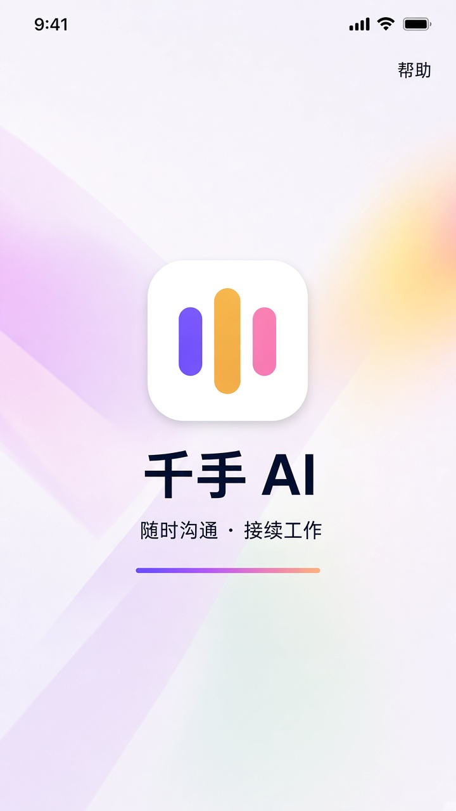
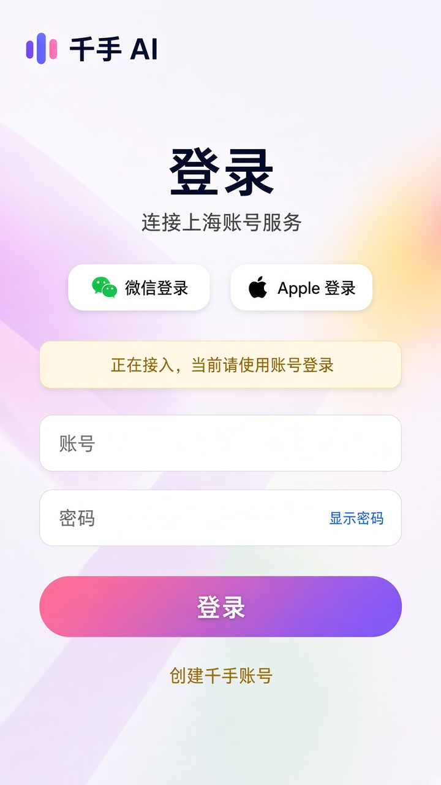
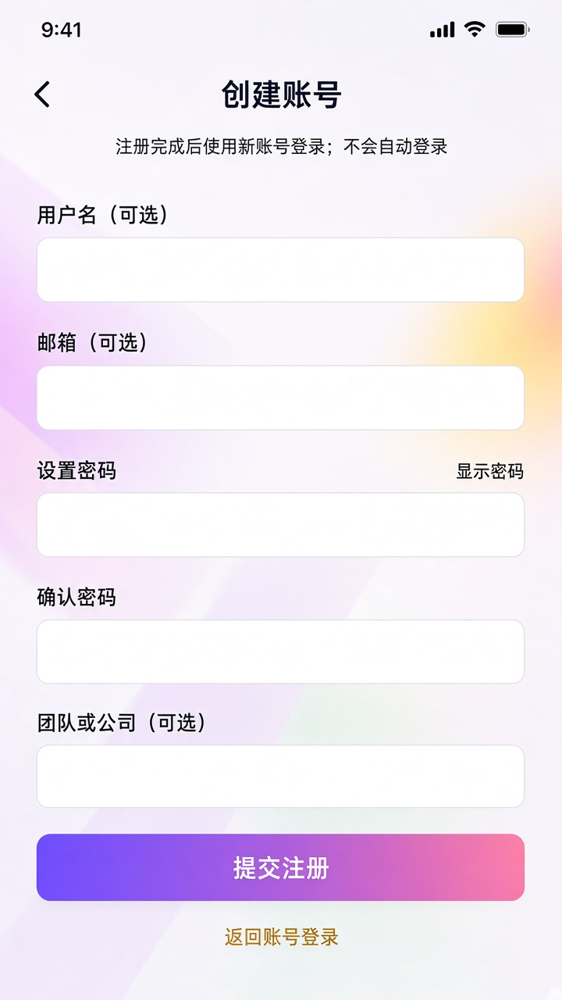
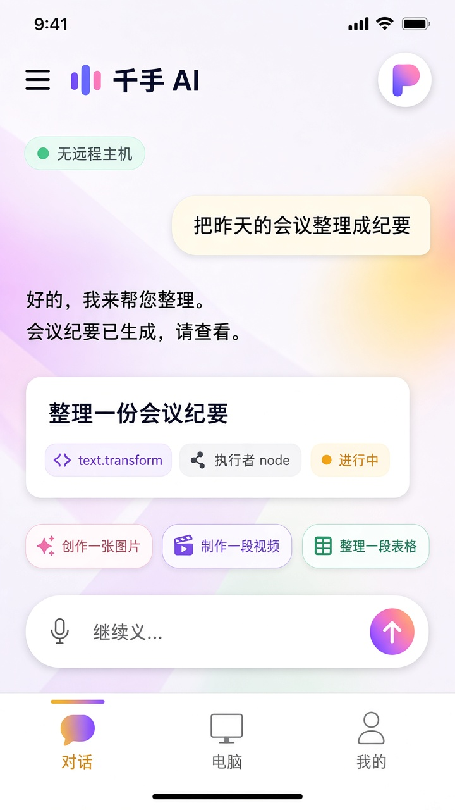
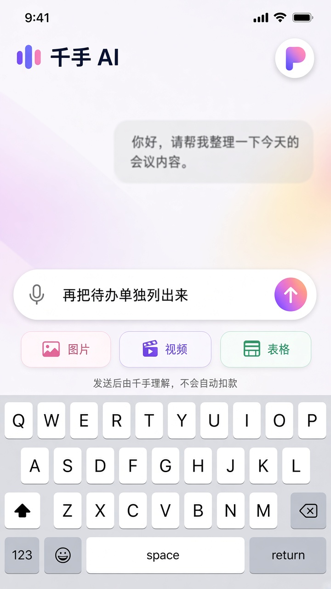
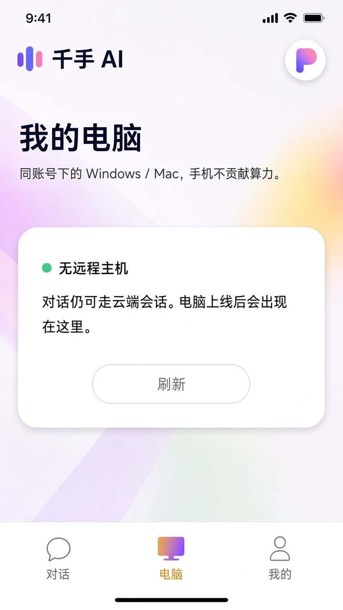
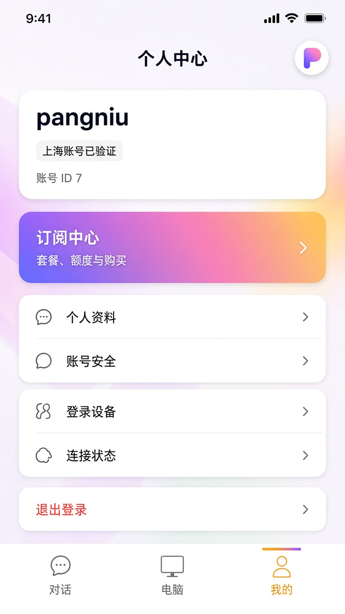
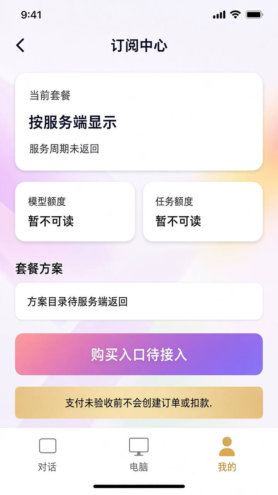

千手手机端 · 该有哪些页
先看主流智能体 App 怎么拆页，再决定千手抄什么。豆包是超级 App（对话+市场+创作+云盘+我的）。Kimi / ChatGPT 是对话铺满、历史进侧栏。千手的差异是电脑在干活，不是再做一遍豆包。
未登录开屏 → 登录 ⇄ 注册 → 必要时 TOTP。登录前进不去壳，没有游客模式。
对话主页。消息流 + 任务卡插在对话里。左上打开会话列表。底部是对话组件，不是营销输入框。
电脑同账号 Windows / Mac。没有主机就写「无远程主机」，对话仍走云端。点一台电脑，是进它的原会话，不把两段历史揉在一起。
我的个人中心。第一入口是订阅中心。下面才是资料、安全、登录设备、连接状态、退出。
订阅中心从「我的」进入的全屏。套餐、模型额度、任务额度。读不到就写暂不可读。购买按钮在支付验收前保持「待接入」，不许编价格。
对话组件（常驻，不算一页）
叠在对话页底部，键盘弹出时收起底栏。结构固定四层：快捷能力（图 / 视频 / 表，可收）→ 输入条（语音 · 文本 · 发送）→ 一句说明「发送后由千手理解，不会自动扣款」→ 系统键盘。有字才点亮发送。语音要先同意，识别结果进输入框，不自动发出。
界面







